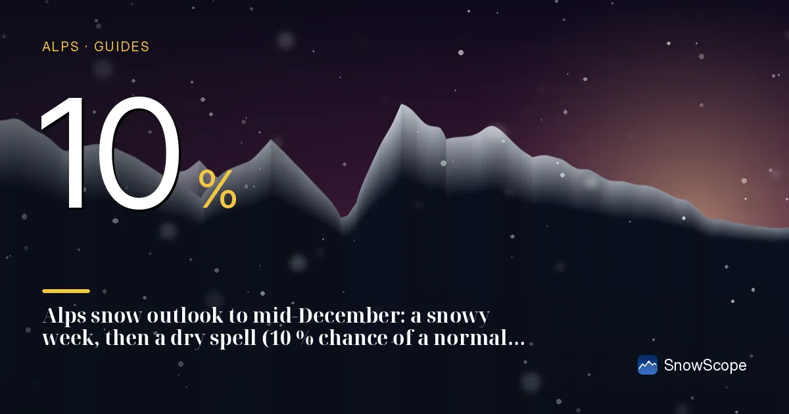
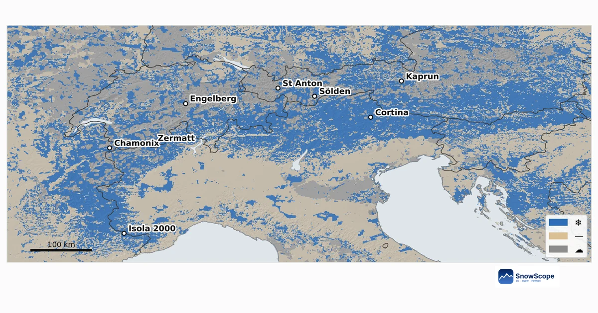
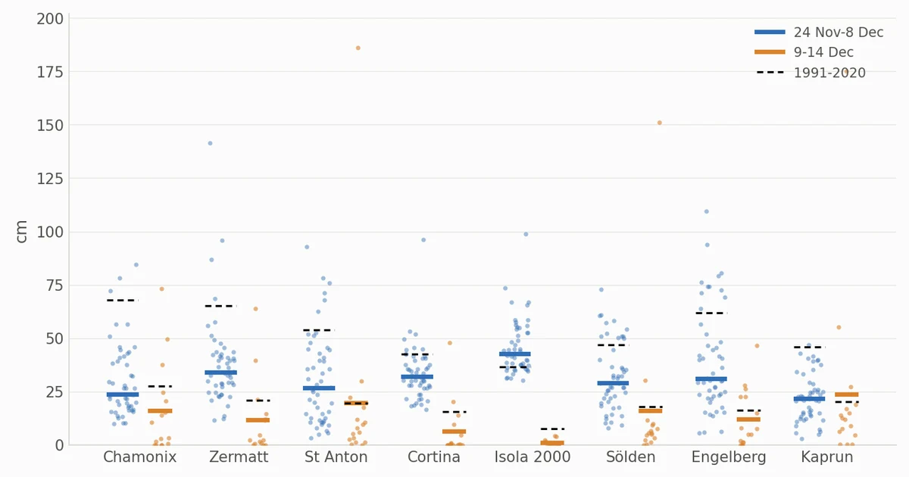

Alps snow outlook to mid-December: a snowy week, then a dry spell (10 % chance of a normal fortnight, 24 November 2026)
Late November has turned the Alps white: NASA's MODIS saw snow on 84 % of the clear ground above 1,000 m in the last 8 days, and more is on the way. The 50-member ECMWF ensemble of 24 November gives the Alpine mountain cells 19.1 mm of snow water, roughly 19.1 cm of fresh snow, between 24 and 30 November, a little above the 1991-2020 normal of 17.8 mm. Then the tap closes: 9 mm for 1 to 8 December against a normal of 21.9 mm. Over the whole fortnight, only 10 % of the members end above normal. The exception is the south-western Alps, where Isola 2000 has 74 % of members above normal.
See the live snow forecast for Alps in the SnowScope appSnow depth, powder alerts and the 3D map, free.

Snow on the ground: what NASA MODIS sees
Clouds made the last week hard to see: on 17 and 22 November only 2 % of the mountain ground was clear on both passes. Keeping the last clear look of each 500 m pixel between 16 and 23 November, 32 % of the ground above 1,000 m was never seen, the rest gives a clear picture: 69,034 km² of snow against 12,983 km² of bare ground.
By height, 70 % of the visible ground is white between 1,000 and 1,250 m, 87 % between 1,500 and 1,750 m and 97 % between 2,000 and 2,250 m; above 2,250 m it is 99 %. The lowest mostly white band is the 1,000 to 1,250 m one, so the snow line sits at about 1,000 m on sunny slopes too. MODIS sees snow through the NDSI, (green - SWIR) / (green + SWIR), which is high for snow and low for clouds (Hall et al. 2002), but forests hide part of the snow below about 1,500 m, so the low bands are rather an underestimate.

24 to 30 November: the snowy week
The first week is the confident part: over the whole fortnight every one of the 50 members gives Zermatt, Cortina and Isola 2000 more than 10 mm of snow water, and most of it falls now. Median totals for 24 to 30 November: Isola 2000 36.6 cm, Cortina 26.9 cm, Zermatt (cell at 2,877 m) 26.5 cm, Sölden 19.7 cm, Engelberg 19 cm, Chamonix 17.8 cm, St Anton 15.4 cm and Kaprun 10.5 cm.
Fresh snow depth is snow water times ρw / ρnew; with ρnew about 100 kg/m³ (Judson and Doesken 2000), 1 mm of water gives about 1 cm. Colder snow at high altitude is lighter, so these centimetres are a floor above 2,500 m. The snow share of the precipitation, φ = S / P, says where it stays white: 99 % at the Zermatt cell, 98 % at Sölden, 96 % at Cortina, but 75 % at the lower Chamonix cell, where the valley floor gets part of it as rain.

1 to 8 December: the dry spell
In the second week the members almost all agree on less snow. The region-wide mean falls to 9 mm against a normal of 21.9 mm; medians: Chamonix 5.7 cm, Zermatt 5.5 cm, Cortina 2.3 cm, Isola 2000 3.9 cm, while the northern side keeps a little more, Engelberg 12 cm and Kaprun 9.6 cm.
Over the full 15 days, the chance of beating the normal is 6 % at Chamonix (median 23.4 cm against 67.9 cm), 8 % at Zermatt, 12 % at St Anton, 18 % at Cortina, 24 % at Sölden and 22 % at Engelberg. Of all mountain cells above 1,000 m, 82 % have a chance of 40 % or less and only 9 % have 60 % or more, nearly all in the Maritime and Cottian Alps around Isola 2000.

9 to 14 December: NOAA GEFS
Beyond day 15 we use the 16 complete members of NOAA's GEFS of 24 November, counting 6-hour precipitation only when the snow flag is on (S = Σ P6h · CSNOW). Across the Alps, 12 % of members beat the normal of 9 to 14 December, mean 11 mm against 16.3 mm. The northern Alps fare a bit better than the south: Kaprun mean 23.4 mm against 20.2 mm, St Anton 19.7 mm against 19.7 mm, while Isola 2000 gets 0.9 mm against 7.5 mm. At three weeks this is a tilt of the odds, not a forecast (Vitart and Robertson 2018).
The NAO and the Arctic Oscillation
NOAA's GEFS forecast lifts the NAO to +0.97 on 26 November, then brings it down to -0.29 by 4 December. The Arctic Oscillation drops further, to -1.34 on 2 December, with 77 % of member-days negative from day 8. A negative AO means a weaker polar vortex and cold air spilling south, often with high pressure over central Europe: cold and dry in the Alps, snowy only when a Mediterranean low forms (Thompson and Wallace 1998; Hurrell 1995). That is consistent with the ensemble's dry first week of December, and with the extra snow on the southern side this week.
Snow days in the Swiss Alps dropped in a step at the end of the 1980s, driven by temperature rather than precipitation (Marty 2008, SLF), so the 1991-2020 normal already includes that warmer climate. For avalanche danger after this week's snowfall, the reference remains the bulletins of SLF and the other Alpine warning services.

How far to trust these numbers
Every number is for a 0.25° cell, about 28 km north-south and 19 km east-west at Alpine latitudes. A cell's mean height can be far from a resort's: the Chamonix cell sits at 1,507 m, the Zermatt cell at 2,877 m. That is why we compare each cell with its own 1991-2020 normal: the ratio cancels most of the height effect. The members are 50 equally likely futures, so a 10 % chance means 5 members, enough to be real, too few to be precise.
Snowfall is only half the story for skiing. Wind, sun and warm spells move and melt snow, and remote sensing studies such as Durand et al. (2008) show that the snow water on the ground is best read by combining snow maps with energy-balance reconstruction. For the next few days, a daily forecast and the resort reports are the right tools.

Tips for skiers
- Best skiing window: right after this week's snowfall; the first days of December look calmer and sunnier.
- South-western Alps (Isola 2000, Auron, Sestriere side) have the best odds of an above-normal fortnight.
- After the snowfall, read the avalanche bulletin before any off-piste: new snow on old, early-season layers is fragile.
- Check again around 1 December: the odds for 9-14 December will be much sharper then.
References and credits
- ECMWF open data: IFS ensemble forecasts (ENS), run of 24 November 2026 00 UTC, 0.25° grid, snowfall and total precipitation (CC BY 4.0) www.ecmwf.int/en/forecasts/datasets/open-data
- Zhou, X. et al. (2022). The development of the NCEP Global Ensemble Forecast System version 12. Weather and Forecasting 37, 1069-1084 doi.org/10.1175/WAF-D-21-0112.1
- NOAA Global Ensemble Forecast System (GEFS) open data on AWS: run of 24 November 2026 00 UTC, 0.5° grid, APCP and CSNOW registry.opendata.aws/noaa-gefs/
- Hersbach, H. et al. (2020). The ERA5 global reanalysis. Quarterly Journal of the Royal Meteorological Society 146, 1999-2049 (monthly means 1991-2020, Copernicus Climate Change Service) doi.org/10.1002/qj.3803
- NOAA Climate Prediction Center: daily NAO, AO, PNA and AAO index forecasts from the GEFS ensemble www.cpc.ncep.noaa.gov/products/precip/CWlink/
- Hurrell, J.W. (1995). Decadal trends in the North Atlantic Oscillation: regional temperatures and precipitation. Science 269, 676-679 doi.org/10.1126/science.269.5224.676
- Thompson, D.W.J. and Wallace, J.M. (1998). The Arctic Oscillation signature in the wintertime geopotential height and temperature fields. Geophysical Research Letters 25, 1297-1300 doi.org/10.1029/98GL00950
- Cassou, C. (2008). Intraseasonal interaction between the Madden-Julian Oscillation and the North Atlantic Oscillation. Nature 455, 523-527 doi.org/10.1038/nature07286
- Vitart, F. (2014). Evolution of ECMWF sub-seasonal forecast skill scores. Quarterly Journal of the Royal Meteorological Society 140, 1889-1899 doi.org/10.1002/qj.2256
- Vitart, F. and Robertson, A.W. (2018). The sub-seasonal to seasonal prediction project (S2S) and the prediction of extreme events. npj Climate and Atmospheric Science 1, 3 doi.org/10.1038/s41612-018-0013-0
- Marty, C. (2008). Regime shift of snow days in Switzerland. Geophysical Research Letters 35, L12501 (WSL Institute for Snow and Avalanche Research SLF) doi.org/10.1029/2008GL033998
- WSL Institute for Snow and Avalanche Research SLF: avalanche bulletin and snow maps www.slf.ch/en/
- Riggs, G.A., Hall, D.K. and Román, M.O. (2019). MODIS Snow Products Collection 6.1 User Guide. NASA / NSIDC nsidc.org/sites/default/files/c61_modis_snow_user_guide.pdf
- Hall, D.K., Riggs, G.A., Salomonson, V.V., DiGirolamo, N.E. and Bayr, K.J. (2002). MODIS snow-cover products. Remote Sensing of Environment 83, 181-194 doi.org/10.1016/S0034-4257(02)00095-0
- NASA Global Imagery Browse Services (GIBS): MODIS_Terra_NDSI_Snow_Cover and MODIS_Aqua_NDSI_Snow_Cover, 16-23 November 2026 www.earthdata.nasa.gov/engage/open-data-services-software/earthdata-developer-portal/gibs-api
- Copernicus DEM GLO-90 (European Space Agency, Copernicus programme) doi.org/10.5270/ESA-c5d3d65
- Durand, M., Molotch, N.P. and Margulis, S.A. (2008). Merging complementary remote sensing datasets in the context of snow water equivalent reconstruction. Remote Sensing of Environment 112, 1212-1225 doi.org/10.1016/j.rse.2007.08.010
- Judson, A. and Doesken, N. (2000). Density of freshly fallen snow in the central Rocky Mountains. Bulletin of the American Meteorological Society 81, 1577-1587 doi.org/10.1175/1520-0477(2000)081<1577:DOFFSI>2.3.CO;2
About these numbers
Snowfall: ECMWF ensemble (50 members, 0.25°) to day 15, NOAA GEFS (16 members, 0.5°) for days 16-21, compared with the 1991-2020 normal of the same calendar days. Snow on the ground: NASA MODIS, last clear view 16-23 November. Mountain cells above 1,000 m.
Cite this report
For research, teaching or the press: the numbers and charts are free to reuse under CC BY 4.0 with this citation.
SnowScope (2026), Alps snow outlook to mid-December: a snowy week, then a dry spell (10 % chance of a normal fortnight, 24 November 2026), https://snowscope.app/blog/en/2026/11/alps-snow-outlook-next-3-weeks-ecmwf-noaa-24-november-2026.html, accessed 2026-11-24
SnowScope (Atlas Labs). (2026, November 24). Alps snow outlook to mid-December: a snowy week, then a dry spell (10 % chance of a normal fortnight, 24 November 2026). SnowScope snow reports. https://snowscope.app/blog/en/2026/11/alps-snow-outlook-next-3-weeks-ecmwf-noaa-24-november-2026.html
BibTeX
@misc{snowscope2026alpssnowoutlooknext3week,
author = {{SnowScope (Atlas Labs)}},
title = {Alps snow outlook to mid-December: a snowy week, then a dry spell (10 % chance of a normal fortnight, 24 November 2026)},
year = {2026},
month = nov,
howpublished = {\url{https://snowscope.app/blog/en/2026/11/alps-snow-outlook-next-3-weeks-ecmwf-noaa-24-november-2026.html}},
note = {Published 2026-11-24 17:00 UTC; accessed 2026-11-24}
}· CC BY 4.0 · Methods, data and tools →
Follow Alps
Free: a message when fresh snow is coming, and the forecast every morning.
More snow reports

Alpe d'Huez got 106 cm of fresh snow in 72 hours by 23 November. More powder coming, but watch for rain mid-week.

Zugspitze tops the region with 63 cm on 23 November. Nine resorts have snow; 34 cm fell in three days at Nebelhorn.

14 Swiss resorts tracked on 23 November; Zermatt leads with 63 cm depth, 29 cm more forecast by 26 November.